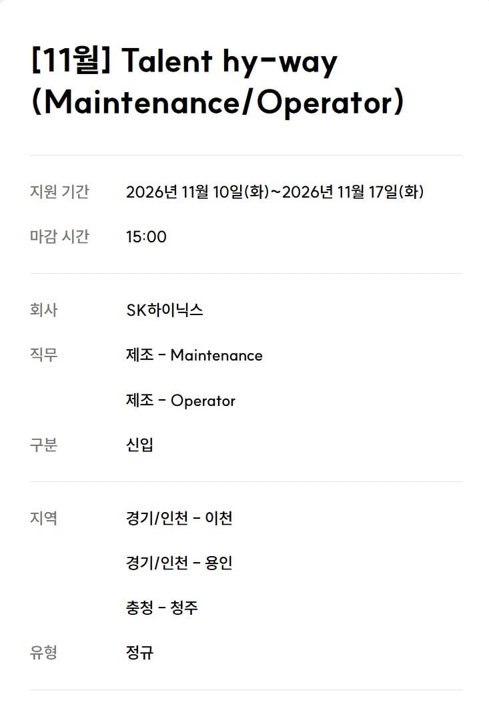

나이가 제일 중요해서 20대 중후반 위로 컷이라던데 ㄹㅇ임?

나이가 제일 중요해서 20대 중후반 위로 컷이라던데 ㄹㅇ임?
ㅋㅋㅋㅋㅋㅋ.. 웃고 갑니다.. 술먹는게 힘들어보이긴함
노조 짱짱한 하이닉스 공장이 힘들다? ㅋㅋㅋ
다른 공장들은 지옥임 ㅋㅋㅋ
경기도 곳곳에 있는 공단 가서 썩어가는 제조업 공장에서 12시간 2교대 해보면 그런말 쏙 들어갈듯
생산직이니깐 쌩쌩한애들 뽑는거지
성별이 없네 여자만 아니야?
그거 특이사유아니면 적는게 불법일껄?
오퍼 여
메인트 남
경기 안좋으니까 진짜 지원하고싶다...근데 나이때문에 바로 컷될듯
저거 옛날엔 돈은 많이줘도 디지게 힘들어서 다들 오래 못다녔는데 요즘은 금융치료 돼서 관두는사람 적을듯
비유하면 택배 물류 창고허브 상하차 수준으로 힘듬?
아까 똑같은글 올라왔을때 댓글보니까 6일일하고 2일쉬고 주주야야주야 이런식이라더라 6일당직 슨다고 보면 될듯
와 그건 힘들겠네
그래서 어린애들만 뽑는다는데 오히려 나이먹고 아쉬운애들은 꾹참고 할거같은데 절대 안뽑아준다니까 뭐,.,
진짜 이거 아니면 죽는다 생각으로 임해야겠네
공고보고왔는데 생산직인데도 합격하기 개빡세보이네 ㄷㄷ
몇년전까지 이정도는 아니였는데
생산직은 20대후반부터 잘 안뽑음 초중반만 뽑고 일 오래하는애들을 뽑아야지 이왕할거면
반도체공장에서 일하다가 암걸리는거 많다더라
26살 컷 ㅅㄱ
금융치료는 달달한데 그만큼 진짜 힘드니..그래도 앞날 생각하면 지원 고고
ㅇㅇ하닉은 27살 컷임
이 위로 절대 안뽑음ㅋㅋ
공장은 오래 쌩쌩하게 일할 사람이 짱이니까
그래서 고졸 뽑는걸로 유명하잖아
하닉 생산직 예전엔 들어가기 어렵지않았는데 세상 어떻게 될지 진짜 모르네
얘네 생산직이 아무리 그래도 지금 이 수십억 돈을 받는게 맞나 싶다
미국 UPS마냥 강력노조가 다 헤쳐먹고 그 외 중소기업 다니는 애들은 박탈감에 몸서리치고
박탈감은 나지만
그렇다고 전국민 연봉똑같이 줄 순 없잖아
개개인 능력에 따라 성과급으로 받는거면 모르겠는데
지금 그냥 죄다 N/1해서 영업이익 갈라먹자 하는건 성과급도아니고 그냥 로또지
그게 회사 힘들때 같이 희생하는 조건으로 확정한 조건이라 뭐 인정해줘야지. 회사도 동의한 조건인데.
자본주의 사회에서 노사간 계약 맺은거대로 가고 실제로 그만큼 가치창출이 이뤄지는 입장에서 별로 문제될건 없다고 봄.
남의 회사일에 너무 과한 참견 아닌가 싶은데
원래 성과급이 영업이익에서 일정부분 때줌 대다수 회사가
더군다나 한국 회사들이 기본급을 낮게 측정하고 성과급으로 돌려주는 경우도 많아서
근데 그렇다고 사무직만 돈많이준다? 이건 프랑스꼴나는거임..(프랑스가 사무직 생산직 급여격차가 크다고 알고있음)
청주 하이닉스 공순이와 결혼해서 전업주부 하는게 꿈입니다
하닉 27살이라며...
이거 개힘듬? 근데 20후라 안되긴할듯..
나이컷임
오퍼레이터는 거의 여자만이고
메인터넌스는 전졸까지만일텐데
나이도 있어서 대졸은 거의 나가리
4조 3교대인거보면 사람 많이 지원하면 급여 낮을것같은데 사람이 없어야 야근하는거 아닌가?
24시간 365일 내내 생산라인이 돌아가니깐 4조 3교대로 운영하는거야
어차피 저런 공장들은 기본급은 낮고 수당이랑 인센티브로 돌아가는 구조임. 물론 떼이는 세금도 많긴 한데
사람마다 능력이 다 다른데 문제는 이걸 공정하게 평가하는게 잘안되는 경우가 많음... 스펙으로 걸러도 그안에 또 구라 스펙으로 사기치는 사람이 정말 많음.
대기업은 일단 뽑아 놓으면 쉽게 못자르고 대충 쉬운업무로 돌리기도 하는데... 욜로욜로 거리다 나이먹고는 나이빨로 위로 올라가기도 하더라... 일잘하는 놈은 열심히 하다 번아웃 와서 이직하고... 파벌에서 밀려 이직 퇴직하기도 하고...
단순히 일잘하는게 능력이 아님... 살아 남는게 능력이 되어버림...
방진복 착용이 진짜 좆같은데.. 열많은 사람은 진짜 고문임
그래도 현장 온도는 일정온도로 유지 되서 여름 겨울 탈일은 없음
유지되면 뭐해 옷안이 찜통인데.. 내가 입고 일해서 하는말임
안에 조그만 선풍기같은거 못집어넣음??
해본적은 없지만 안에서 바람이 밖으로 새나오면 좆되지않을까
내년에 10년차인데 토요일에도 출근 2~3 번씩하고
3~4년 다니다가 퇴사하는 애들 제법 많더라
일이 힘든것보다 개인정비 시간이 잘 안나긴함
장단점은??
요즘 어디가나 구직자가 넘쳐서 일단 나이컷부터 하는것 같더라. 경력도
저거 뒤지게 힘들다던데 몸을 그냥 갈아마신다더라